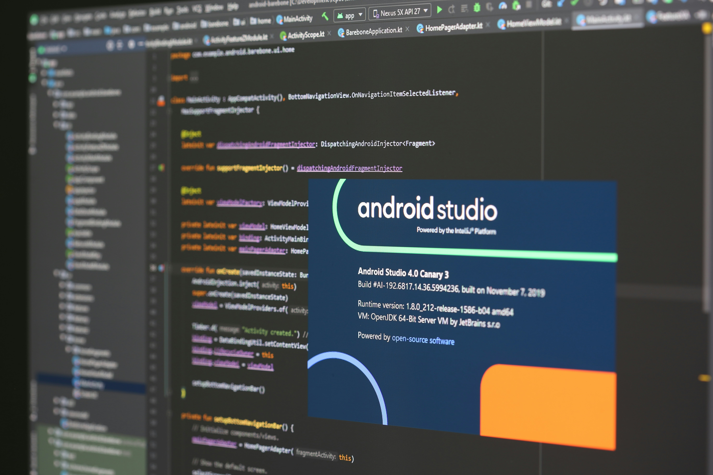
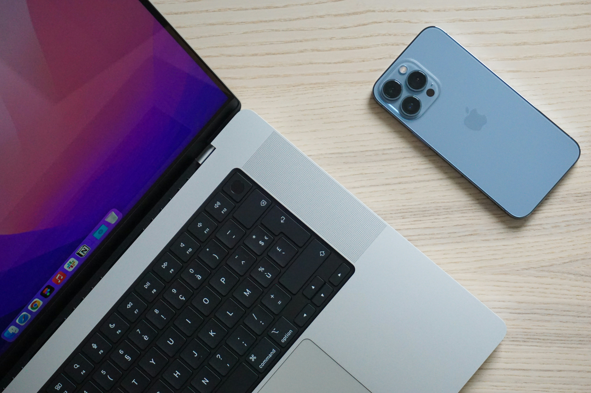

5 Mei 2026, 23:08
Di project FoodCourt Go ini, saya ngerjain bagian coding hampir sendirian sekitar 90% kerjaan ada di saya. Tim tetap ada kerja juga, tapi beban utama emang numpuk ke sisi teknis. Dari database Firebase, alur customer, sampai dashboard admin, semuanya harus saya rapihin satu-satu. Artikel ini isinya curhatan jujur soal ribetnya project mobile, tapi tetap ada detail teknis biar nggak cuma jadi bacotan kosong.

3 Mei 2026, 23:30
Setelah bekerja beberapa waktu, blog sederhana ini akhirnya dapat empat fitur baru: tampilan responsif, mode gelap/terang, thumbnail setiap artikel, dan kemudahan upload gambar. Yuk lihat apa saja yang berubah!
📷
No thumbnail
2 Mei 2026, 10:20
Aku lagi mikir web blog ini mau dibawa ke mana berikutnya: dari editor yang lebih enak dipakai, gambar thumbnail, kategori, pagination, sampai dark mode. Semua itu bisa dibuat, tapi ada yang gampang duluan dan ada juga yang lumayan bikin pusing. Ini catatan rencana upgrade blogku sendiri.
📷
No thumbnail
2 Mei 2026, 10:10
Malam itu aku sadar satu hal: ada cerita yang tidak perlu terus dipaksa hidup, tapi juga tidak harus dibenci. Kadang yang paling dewasa adalah mengucapkan terima kasih, meminta maaf, lalu benar-benar mulai membangun diri sendiri.
📷
No thumbnail
2 Mei 2026, 10:00
Berawal dari nonton film Social Network jam 12 malam, iseng menantang diri sendiri, dan berakhir dengan blog statis buatan tangan dalam waktu 3–4 jam. Ini cerita di balik layar blog ini.